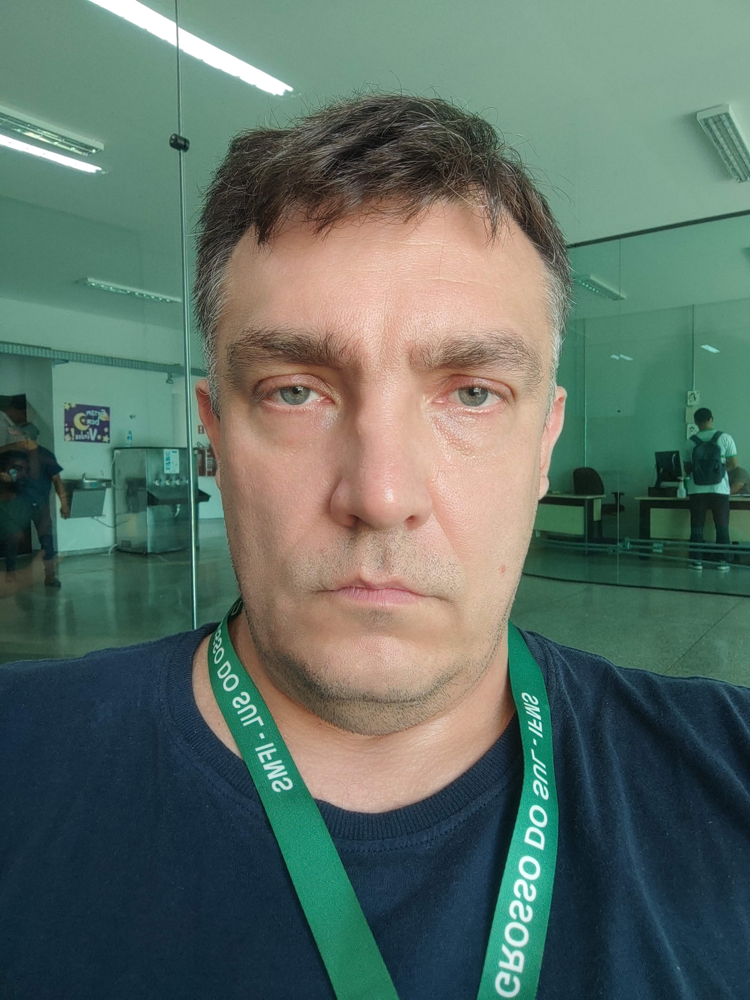

Faculdade de Desenvolvedores Web
ATESTADO DE MATRÍCULA
Certificamos que Marcelo Tomporoski Perez, portador(a) do CPF nº 710.310.731-91, encontra-se regularmente matriculado(a) no curso de Especialização Lato Sensu em Programação Web, nesta instituição, no período de 15/01/2023 a 18/12/2025. O presente atestado é fornecido para fins de comprovação de matrícula e válido para todos os efetivos legais que se fizerem necessários